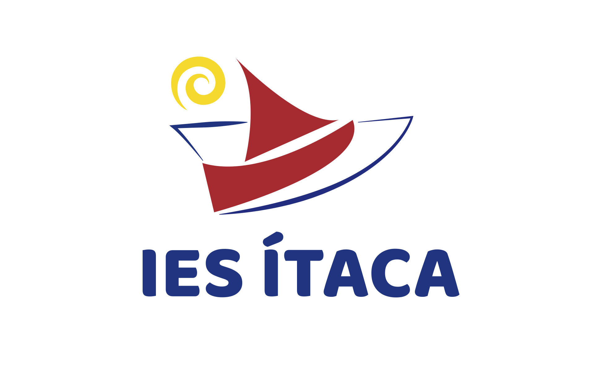
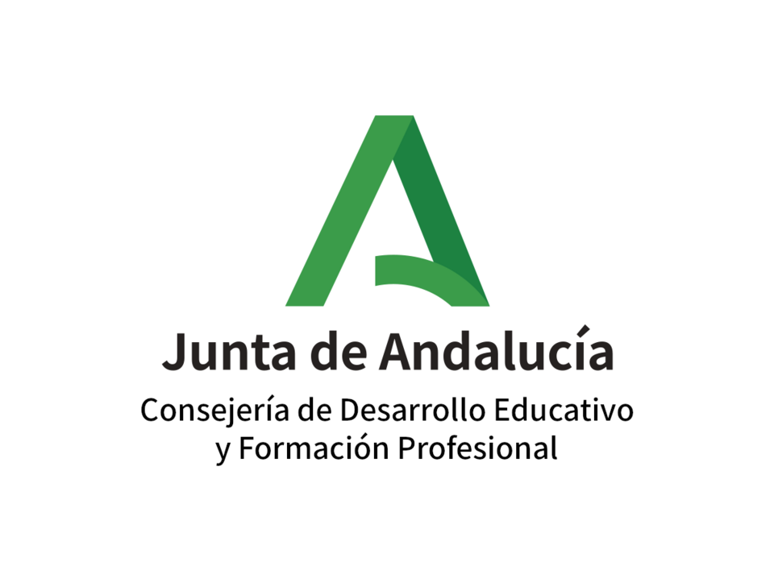

Créditos
Objetivo del proyecto
Este recurso se ha creado en el Proyecto de Innovación "AsignaTour" del IES Ítaca de Tomares (Sevilla) con la finalidad de acercar la Lengua de Signos Española en su habla andaluza al alumnado de Educación Secundaria Obligatoria y así podar tomar conciencia de la realidad de las personas sordas que nos rodean. Licencia Creative Commons Reconocimiento No comercial Compartir igual 4.0.
Imágenes
Las imágenes de portada de cada sección han sido elaboradas con ChatGPT de OpenAI.
Vídeos
Los vídeos de vocabulario han sido signados por Cristina Torres Méndez y grabados por Antonio Romero Algarín. Licencia Creative Commons BY-NC-SA 4.0
El vídeo con la situación comunicativa ha sido signado por Cristina Torres Méndez y Ana Mena Bravo. Licencia Creative Commons BY-NC-SA 4.0
Recurso Educativo Abierto
El recurso ha sido creado por Antonio Romero Algarín con eXeLearning, el editor libre y de fuente abierta diseñado para crear recursos educativos. Licencia Creative Commons BY-NC-SA 4.0
El estilo usado es EducaAnd Escolares, de la Junta de Andalucía, tomando como ejemplo el Proyecto REA/DUA. Licencia Creative Commons BY-NC-SA 4.0
